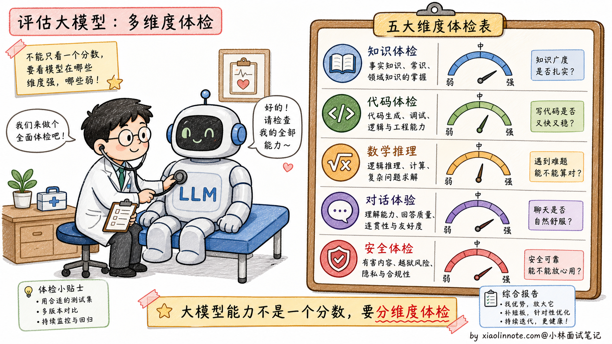
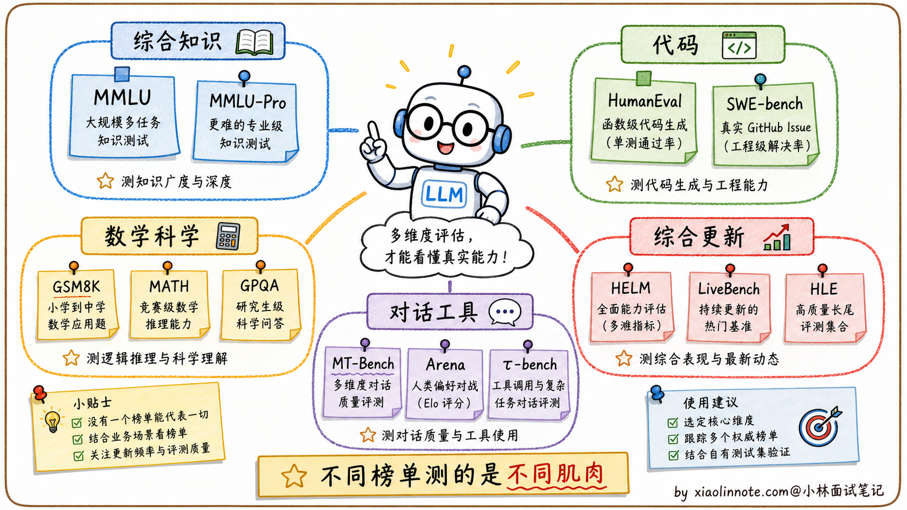
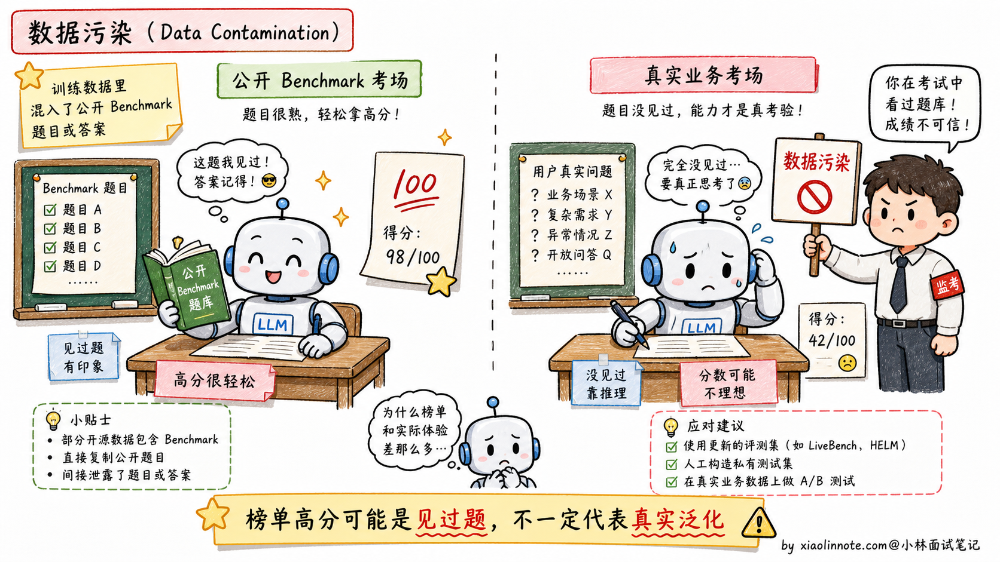
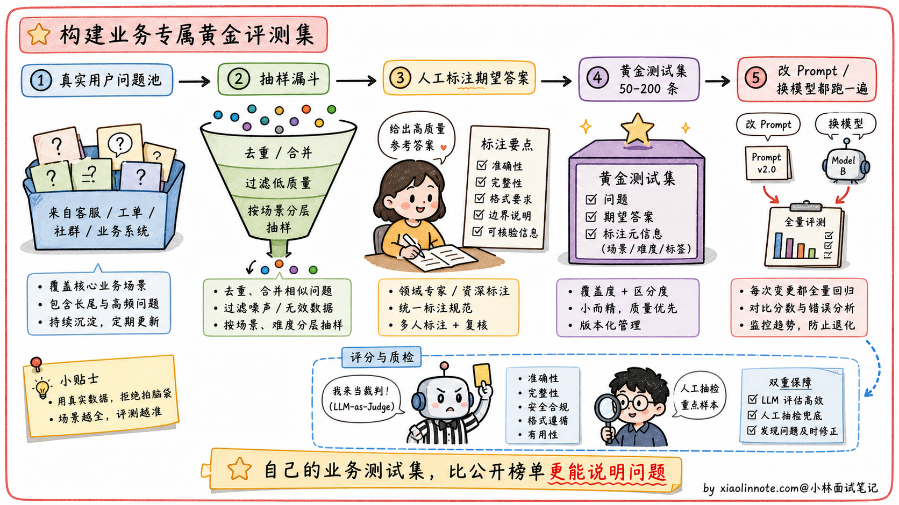
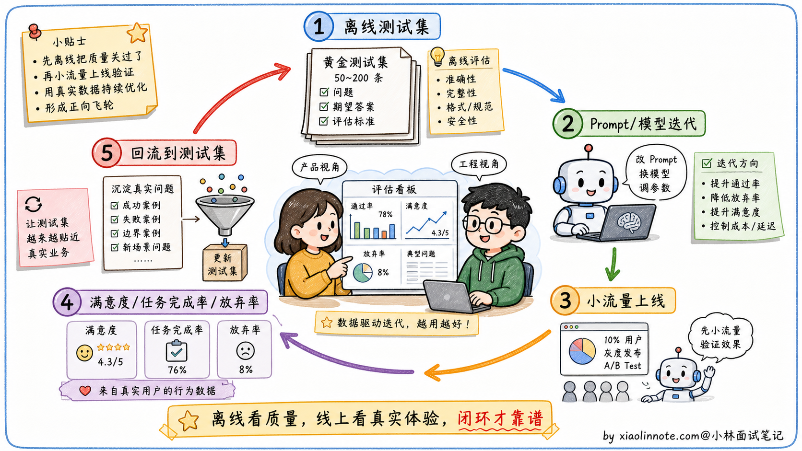

21. 大模型能力评测指标有哪些？
👔面试官：来讲讲大模型能力的评测指标有哪些？
🙋♂️我：常用的有 MMLU、HumanEval、GSM8K 这些 Benchmark，能反映模型的综合能力。
👔面试官：……Benchmark 的名字会背是基本功。但你能说清楚每个 Benchmark 测什么吗？再说，学术 Benchmark 真的能反映实际效果吗？为什么有些模型在排行榜上很高但实际用起来不好？
🙋♂️我：哦哦，可能是过拟合到 Benchmark 上了？
👔面试官：方向对了一半。这个现象有专门的术语叫「数据污染」（Data Contamination）。再问你：如果不能完全相信 Benchmark，那工程上到底用什么评测模型？
🙋♂️我：呃……用户反馈？
👔面试官：「用户反馈」太笼统。工程上的标准做法是建业务测试集，从真实用户请求里采样、人工标注期望输出，每次改 Prompt 或换模型都跑一遍。这种「学术 Benchmark + 业务测试集 + 线上指标」的闭环你能讲清楚吗？回去搞清楚再来。
被这三个问题一通追下来，评测这道题就不再是「背几个 Benchmark 名字」的水平了。Benchmark 各自的局限、业务测试集怎么搭、线上反馈怎么闭环回来，这三件事得一起讲。
💡 简要回答
我对这块的理解是，学术 Benchmark 只能作为参考，真正重要的是在自己业务数据上的表现。MMLU / MMLU-Pro 测综合知识，HumanEval / SWE-bench Verified 测代码，GSM8K / MATH / GPQA 测数学和科学推理，LiveBench、Humanity’s Last Exam 这类更新型评测用来缓解数据污染。这些指标看一眼能大概判断模型能力区间，但不能直接等价成业务效果。我们实际项目里的做法是，从真实用户请求里采样、人工标注期望输出，建一个 50-200 条的测试集，每次改 Prompt 或换模型都在上面跑一遍，加上线上的用户满意率来形成闭环，这才是可靠的评测体系。
📝 详细解析
为什么需要评测指标
大模型的能力是多维度的，「感觉用起来还不错」不足以支撑工程决策。当你需要从 GPT-4o 换到 Claude，或者决定是否要对模型进行微调，或者衡量 Prompt 优化后的效果提升，都需要量化指标。评测指标的价值在于把「主观感受」转化成「可比较的数字」。
但评测模型远比评测传统软件难得多，因为语言生成是开放性任务，「正确答案」的边界往往是模糊的。这也是为什么这个领域同时存在多种不同侧重的 Benchmark。下面来认识几个最常被引用的学术 Benchmark，了解它们各自考查的是什么维度。

主流学术 Benchmark 逐一介绍
MMLU / MMLU-Pro 是最广泛引用的综合能力测试。MMLU 涵盖 57 个学科领域，从高中数学、历史、法律到医学和计算机科学，全部是四选一的单项选择题。MMLU-Pro 难度更高、选项更多，也更强调推理。可以把它理解成一套超全面的「文化水平考试」，考的是模型的知识广度和推理基础。
HumanEval、MBPP 和 SWE-bench Verified 是代码能力的基准测试。HumanEval 由 OpenAI 设计，包含 164 道编程题，每道题给出函数签名和 docstring，要求生成完整的函数实现，然后用隐藏的测试用例验证正确性。SWE-bench Verified 更接近真实软件工程，让模型修真实 GitHub issue，能更好评估代码理解、修改和测试能力。Pass@k 是常见指标，表示生成 k 个候选代码，至少 1 个能通过所有测试的比例。
GSM8K、MATH、GPQA 测试数学和科学推理能力。GSM8K 是小学数学应用题，考基础的四则运算和逻辑推理；MATH 是竞赛数学，包含代数、几何、组合数学等；GPQA 更偏研究生级别的科学问答，很多题需要物理、化学、生物等专业知识和多步推理。
MT-Bench、Arena、τ-bench 更偏对话和 Agent / Tool Use 能力。MT-Bench 设计了一系列需要多轮交互的场景，用「LLM-as-Judge」方式给回答打分；Chatbot Arena 更像用户真实偏好投票；τ-bench 这类评测会看模型在工具调用、多轮状态管理、业务流程里的表现，更贴近 Agent 应用。
HELM、LiveBench、Humanity’s Last Exam 是更综合或更新型的评测。HELM 覆盖准确率、鲁棒性、公平性、有害性等多个维度；LiveBench 会持续更新题目，降低数据污染；Humanity’s Last Exam 则主打更难、更广的综合知识和推理。它们比单一指标更全面，但也更复杂。然而，这些看起来很权威的指标，有一个很难回避的系统性缺陷。

Benchmark 的局限性：数据污染问题
Benchmark 有一个严重的问题：数据污染。
现在的大模型训练数据规模极大，覆盖了互联网大部分公开内容，而 MMLU、GSM8K 这些 Benchmark 的题目也在互联网上公开流传。模型在预训练时可能已经「见过」这些题目的答案，导致测试成绩虚高，并不真正反映泛化能力。
这也是为什么有些模型在学术排行榜上名列前茅，实际用起来却不如名次更低的竞品，因为它们可能是「背过题」的，而不是真的更聪明。

如何建自己的业务评估集
面对 Benchmark 局限性，最务实的做法是建自己的任务特定测试集。
做法通常是：从真实用户请求里采样，人工标注期望答案，形成 50-200 条有代表性的「黄金测试集」；然后每次迭代模型或 Prompt 时，在这个测试集上跑一遍，计算通过率或质量分。
评分方式上，客观任务（信息提取、分类、代码）可以用程序自动验证；主观任务（摘要、问答质量）可以用 LLM-as-Judge，让一个更强的模型（如 GPT-4o）对输出按照给定标准打分。人工抽查 10-20% 的样本可以校准 LLM-Judge 是否可信。

离线评估 + 线上指标的闭环
业务测试集解决了离线评估的问题，但只有离线测试集还不够，生产环境里还需要监控实际的用户体验指标：用户对回答是否满意（明确的点赞/踩、隐式的追问行为）、任务完成率（用户是否实现了目标）、会话放弃率（用户中途退出说明体验差）。
离线评估帮你找问题、快速迭代；线上指标告诉你优化是否真正改善了用户体验。两者结合才是完整的评估体系。

🎯 面试总结
回到开头那段对话，问到大模型评测指标，最重要的是先把学术 Benchmark 和业务评测的关系讲清楚。学术 Benchmark（MMLU、HumanEval、GSM8K、MT-Bench、HELM 等）适合横向对比模型的综合能力，但不能完全相信，因为存在严重的「数据污染」问题（模型在预训练时可能见过测试题）。这一句先讲到，面试官就知道你不是只会背 Benchmark 名字。
接下来讲清主流 Benchmark 各自测什么。MMLU / MMLU-Pro 测综合知识广度和推理，HumanEval / MBPP / SWE-bench Verified 测代码能力，GSM8K / MATH / GPQA 测数学和科学推理，MT-Bench / Arena / τ-bench 测对话、偏好和工具调用，HELM / LiveBench / Humanity’s Last Exam 则是更综合或更新型的评测。能用一两句话说清每个 Benchmark 的设计目标，比单纯报名字深刻得多。
最关键的是讲业务测试集的构建方法。从真实用户请求里采样 50-200 条，人工标注期望答案，形成「黄金测试集」，每次改 Prompt 或换模型都在上面跑一遍。评分方式上客观任务（分类、抽取、代码）用程序自动验证；主观任务（摘要、问答）用 LLM-as-Judge 让强模型代评分，人工抽查 10-20% 样本校准。这套方法是工业界做 LLM 项目的标配，能讲出来证明你真的做过项目。
最后提一句离线评估 + 线上指标的闭环。离线评估帮你快速迭代找问题，线上指标（满意度、任务完成率、会话放弃率）告诉你优化是不是真的改善了用户体验。两者结合才是完整的评估体系。
如果还想再加分，可以提一句数据污染问题的应对方向：避免用公开 Benchmark 直接当训练集、用 LiveBench 这种「持续更新题库」的评测、用业务真实数据做评测。这种「不被 Benchmark 蒙蔽」的工程视角是面试里很难追问的水平。
对了，大模型面试题会在「公众号@小林面试笔记题」持续更新，林友们赶紧关注起来，别错过最新干货哦！